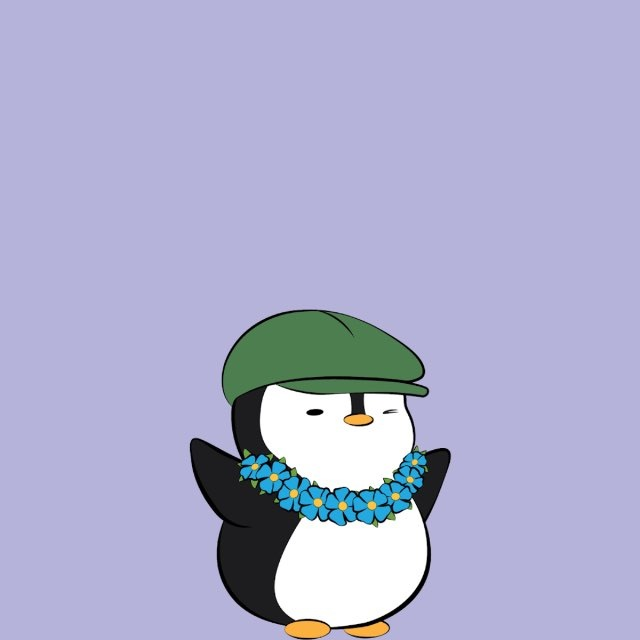

Available for Technical Research
Seungjun
Oh
Investigating the convergence of Crypto Markets, Technical Writing, and Socio-Technical Systems to decode complex digital economies.

Selected Archive
All Projects
arrow_forward
Recent Explorations
Featured Publication
auto_stories
Archive
The Editorial Archive
Experience History
A structured documentation of professional milestones, technical research, and institutional contributions across military, tech, and community sectors.